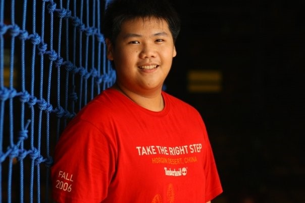

Personal Information
Daniel Dominique
S3745409
Hi all, my name is Daniel Dominique and a first gen Australian. In my spare time I enjoy building computers. I enjoy all aspects of the process from; designing what I want to build, sourcing parts for the build, building the computer and selling it! I first started building computers from need. My interest in IT is with the role that it plays in the lives of users. My experience in the field is limited, having only dabbled with HTML and CSS during my last assignment when creating my website. I have also begun to learn java and python.
Davin Ie
S3327325
Hello! My name’s Davin or I go by Dave. I come from Indonesia which is located just north of Australia and I lived in the city called Jakarta. My family is of Asian-Chinese background and holds tradition in high regard. My hobbies involve watching movies, especially comedy such as; Brooklyn Nine-Nine, or Community, and playing games, some titles I’ve been enjoying are; Undertale, Dead by Daylight, and Starcraft 2. My experience with IT is quite scarce currently after all this is my first year into Bachelor of Information Technology at RMIT. In terms of skills i’ve got a basic understanding of HTML and some experience into Java. The world of IT to me is quite broad and I honestly am unable to pinpoint a certain category in which i enjoy, that said i’ve loved every aspect of it and is eager to learn more.
Sophie Sha
s3742024
Hi everyone! My name is Sophie and I came to Australia 8 years ago after I finished my Bachelor degree of management in China. In the new country I became an early childhood educator. I enjoyed my work, but unfortunately I had to change my career direction due to my unexpected back injury. So I decided to come back to university to study something that has more potential job opportunities. In the past few years I have been developing various personal interests, such as watercolor painting, piano and leather craft. Why am I interested in IT? Because I am interested in developing mobile applications with good UI/UX design that can make our everyday life more efficient and convenient. I chose RMIT as my university because I believe that RMIT is a great place to do IT related studies as it has very good reputation in Australian IT industry. During the study at RMIT, I expect to learn heaps of up-to-date IT knowledge and useful programming skills, and eventually become a real IT professional in the industry. I don’t really have much experience in IT except the basic computer and internet knowledge, I am a fresh beginner in this industry.
Wenshuo Wang
S3729628
Hi, my name is Yuki, my Nationality is Chinese and I can speak in two languages, English and Mandarin. I did my foundation program in Eynesbury College, Diploma of Commerce in Griffith College and currently I am pursuing Bachelor of IT at RMIT University. I used to be a professional aerobic gymnast when I was in high school, and I achieved ‘national level athlete’ title in China. I am also interested in skin care and beauty treatment, so I enrolled in the cert III of Beauty Service as my part time course. I showed interest in IT mainly because of my parents, they both are engaged in the IT industry. They had a great influence on me, as they often tell me IT tips and interesting things when they work at home. That is the primary experience of IT for me. The subtle influence of the family environment sparked my interest of IT and made me choose IT as my major in university. In my high school, I have completed lots of technology related tasks that include making PPT for presentation, publishing advertisements and organizing activities on our student website. I’m familiar with using Microsoft officework, CSS, Wix,Photoshop, WordPress and Adobe Illustrator.
Shane Kenny
S3742600
I am Shane Kenny, I grew up in Cairns with my older brother Bryan in a small suburb (it was small at the time) called Smithfield. Growing up from a young age I discovered my first passion in the kitchen. Later in life I became a chef for just over 11 years of my life, even moving to Melbourne at the age of 18 to pursue more professional experience. During my childhood I remember being fascinated by computers and electronics. I used the computer a lot, using a messenger service during the evening to talk to my friends or playing video games over the weekend. I had my first interaction with a professional use of computers during high school, making a webpage. In 2007, after finishing a long day of work in the kitchen I used use my precious time to wind down by surfing and learn about historical message encryption, and I started to go through YouTube channels based around Information Technology concepts. In 2017 I knew that I wanted to learn more about computers and change my career to represent that. Series of lectures and presentation about information and cyber security which established by UNSW and some official institution changed my entire view of education. Earlier this year I resigned from my job as a chef and was determined to apply for a degree in information technology in RMIT. Due to reputation among peers and location of the campus. During the process of deciding on the course, I am hoping to gain a good grounding in many aspects of information technology while being able to have a stronger focus on information security in my electives.